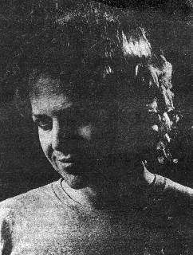

A profile by Frederic Silber
Fanfare, 1989

He has been known for over ten years by pop and rock audiences for his boisterous work as the leader of the delightfully eccentric rock group Oingo Boingo, but in the past four years Danny Elfman has become one of the freshest, most innovative and highly sought after film composers in Hollywood. Having followed (and reviewed) Elfman's soundtrack work from its very orgins, I recently had the plasure of an extensive conversation with Elfman, whom I found to be as personable and charming as he is knowledgeable and informed about film music.
Although Elfman first came to prominance in film music circles with his wonderful score for Pee-wee's Big Adventure in 1985, his first film score was actually composed several years earlier, for Forbidden Zone, a film Elfman describes as "very much a family project." In addition to his brother Richard having written, directed, and produced the film, both Elfman's father and grandfather appeared in the film, and Richard's wife was the art director. The score was performed by an earlier incarnation of Oingo Boingo, called the Myctic Knights of the Oingo Boingo, and although the score contained a good deal of "pop" material that was an extension of what the Mystic Knights had done on stage, Elfman estimates that there were a good thirty or fourty minutes of instrumental music. "It was probably the first time I ever found myself looking to other types of music for inspiration, like Erik Satie, and it's probably the first time I brushed up against Nino Rota."
The specter of Nino Rota would come back several years later as the guiding influence on Elfman's first major Hollywood score, Pee Wee's Big Adventure, a surprise commercial and critical success, and, more importantly, the beginning of the collaboration between Elfman and director Tim Burton. Citing both Rota and Bernard Herrmann as his two big influences while growing up, Elfman was able to utilize references to both mentors in the film. "I was looking for a type of music that was very innocent and light. Bringing in the Nino Rota element felt right for me, because his music had a deeply European/Italian flavor, and I really wanted to find an appeal for Pee Wee that had nothing to do with the country or place that he lived in, because the character was very much out of synch as an American entity, and so I wanted to find something that immediately put him over as something from another world living here. And the innocent and European quality of the music was something that I just thought would work." As for the Herrmann touch, Elfman was able to draw from that reservoir in some of the film's more inspires dream sequences. "There was some strange and wonderful music of Herrmann's that influenced me, in particular, Jason and the Argonauts, The Seventh Voyage of Sinbad, and Mysterious Island. I was enamored of those three, and I'm constantly touching on those scores whenever I am in a fantasy element."
Ironically, when director Tim Burton and Paul Reubens (aka Pee Wee Herman) first discussed the type of score they wanted for the film, the names of both Rota and Herrmann had come up. That, combined with their interest in a "non-traditional" film composer, led them to give the job to Elfman, who had never done an orchestral score, an who had no experience or training in that genre. "I thing they wanted to find a musical approach that wouldn't be the obvious route for comedy. And I have a theory as to why I became known and successful in that field, in that a lot of composers just don't know what to do with comedy, that they really put their major efforts into serious, dramatic films, and that they think comidies are something they can do in their sleep, and that's pretty much been the tradition of American comedy music, ever since the Jerry Lewis movies. so to really apply yourself towards a 'silly comedy' is something that not a lot of composers will do. I just know that for me, Pee Wee's Big Adventure wasmy first real film, and that I was giong to apply myself one-hundred percent."
Elfman is also gracious and generous in citing the help he received on the score. "This was a movie that had a lot of hip points and a lot of precise timing, and Steve Bartek, tha guitarist for Oingo Boingo, who worked as an arranger with me on Pee Wee's Big Adventure, and has since become my orchestrator on my other films, also helped me out a lot."
Elfman is quite cognizant of the importance of the critical acclaim which greeted his first major score, in that, like Randy Newman's score for Ragtime and Mark Knopfler's work on Local Hero, he had succeeded in distancing himself from his "pop" work with Oingo Boingo. "I don't know how I would have gotten my first scoring assognment if it hadn't been for Tim and Paul. I would have continued to have been offered the types of films that I had been getting up til then, 'pop' scores, most of which I detest."
Elfman scored the follow-up to Pee Wee's Big Adventure, the rather lamentable Big Top Pee Wee. Despite the sorely missed touch of director Tim Burton, Elfman once again fashioned a delightful score, giving fuller vent to his penchant for Rota-like themes, especially given the film's circus setting. "The most frustrating thing about the second Pee Wee film was that I couldn't use any of the same themes from the first film, because each was released by a different film company. I would really have loved to use the main theme frothe first film, which already contained the circus motif."
But Elfman and Burton were reunited, and spectacuraly so, on one of 1988's biggest hits, Beetlejuice, which not only was a terrific film but which contained that year's finest film score (at least according to one noted Fanfare critic). In addition to having a wildly comic/horrific symphonic music, there was the wonderful inspiration of using calypso music in the score. "That idea came from Tim. We had talked about using more claypso in the score originally, but I felt that it was better just to use it only in regard to the characters of the Maitlands and the type of music they listened to, so that's why "Day-O" had a reason to be there, but not to really use it in the score itself, because I always follow the images and when I looked at the final version of the movie, it just didn't have a 'calypso' feel to it." Elfman's genius in scoring comedies in general, and Beetlejuice in particular, is not to call attention to the comic aspects of the film. "I always believe in playing it straight, whether it's a funny scene or not."
One of Elfman's best scores, before Batman, was written for a non-comedy, Wisdom, a box-office failure directed and written by and starring Emelio Estevez, who at least had the good sense to hire Elfman to do the music. "It was a real departure when I did it, which is why I wanted to do it. Also, I liked Emelio, and I still do, and for me, as a composer, he's the kind of person that's really fun to work with. Absolutely open to ideas in any way, shape, or form. He doesn't have a lot of preconceptions. Also, the reason I wanted to do the score was that it was to be all synthesizers, and this was my chance to do my totally inorganic score, something all done on synthetic instruments. It was also my first non-comedy and I really enjoied doing it. There was a lot of music, which all had to be performed, and I had to do it, and I'm not a very good keyboard player." When it was suggested that the score compared favorably to the type of electronic scores created by Tangerine Dream, Elfman claimed that not only would that have been unintentional, but that he isn't much of a fan of the eclectic German band. "I think they are the Muzak of comtemporary film music. The idea of composing cues without having seen the film, and sending it to the director who simply lays it into the film, just rubs me the wrong way." However, like the Dream's best scores, Elfman admits to have been looking for something "very tribal and hyptnotic."
Elfman's next significant score was for another box-office smash, Midnight Run. "Finally," Elfman exclaims, "after all those years, I was asked to do a 'contemporary' score. If it had been my first movie, I wouldn;t have done it, but by that time, it was my seventh or eighth film, and I had pretty solidly established myself as an orchestral composer. In fact, I only got calls for orchestral scores, so I figured I was safe at that point in doing a comtemporary score, because i felt I wasn't in any danger of pigeon-holing myself as a pop composer. But it was difficult. Marty Breast, the director, is a real stickler for details, and he was unlike any director I have ever worked with. He's the kind of guy who knows just exactly what he want. He doesn't know how to tell you to do what he wants, but you keep doing it unless it suddenly makes him go 'Yeah'. And he really hears things, I mean he's got better ears than ninety percent of the musicians I know. So it was very difficult finding the music to make Marty kick in and engage, so for a relatively simple score, it took a lot of work. But the end result was a good experience, because I don't mind getten beaten up by a director." The score contains elements of rock and roll, and old-fashioned blues music, but solidly crafted in a Hollywood action mode, proving that Elfman could definitely handle the more routine and standard film assignments, as opposed to just the occasional oddball comedy.
After a rather negative experience scoring Scrooged, another comedy with horror and fantasy elements, in which much of his music was either not used or simply buried, Elfman began his most ambitious project to date, Tim Burton's dark and ominous take on the Caped Crusader, Batman. It's difficult to ascertain whether Elfman would have been offered the film without Burton, despite his glowing reviews and growing reputation, since he was still very much viewed as a Hollywood outsider. As should be expected by now, Elfman's score is terrific, but in unexpected ways. Diametrically opposed to the John Williams "Superman/Raiders/Star Wars" type of score, the music, like Burton's film, is dark, gothic, labyrinthine. Much of the music is intense and brooding, decidely unheroic. According to Elfman, there are several facets to the score. "Certainly there is the darker side, which I was very attracted to. In a way, it was coming full circle, in terms of doing what I always wanted to do. It always surprised me that I became successful in comedy, because my own instincts are very dark, and so after ten films, I was finally coming home to where I always figured it i ever had my way, that's where I would start. I always thought my first movies would be horror films, because I thought that was where my instincts were the strongest. The comedies were fun, and gave me a chance to relax into a style that I really liked, so by the time Batman rolled along, I had developed a lot of confidence and didn't have a lot of those insecurities." Indeed, Elfman's music for Batman may be all the more astounding for its self-assuredness, and although at the time of my conversation with Elfman, the Prince songs from Batman were getting a lot of airplay and attention, many film critics went out of their way to praise Elfman's original score (evev though some, like Vincent Canby in the New York Times mistakenly gave Prince credit for the original orchestral music, much to Elfman's understandable annoyance). "To be fair," Elfman adds, ever the diplomat, "three times in the score, I did an adaptation of the ballad that Prince wrote, using four notes from it. Mainly because the producers knew that the song wouldn't come in until the end credits, and they wanted me to give some recognition of the notes." Although Elfman would have every right to be irked by Warner Brother's extensive exploitation of the Prince songs from the film (even though only three songs are actually heard in the film itself, the remainder of the album being songs "inspired" by the film, and all of it fairly mediocre at that, in this reviewer's opinion), issuing an album simultaneously with the film's release, while Elfman's original score did not reach the stores until the second week of August, nearly two months after the film's opening, Elfman is pleased that the decision was made to release two separate soundtrack albums, one just devoted to his orchestral score, rather than to find just one or two tracks from his score buried on the Prince album.
Although the film is now a commercial blockbuster as well as a critical success, and Elfman's contributions have been rightly praised, there was still an enormous amount of nervousness on the part of the producers regarding Elfman's employment. "Normally, the only person I ever work with is the director. But hereI had the head of production, and Jon Peters [one of the film's executive producers] over my house, many times, playing the themes, mocking up pieces, because they really wanted to be sure. Here they have this enormous movie, an action/adventure film, the type of score thet I have never done. And it's the type of score where one's first impulse, if it weren't for Tim having chosen me, would be, 'Call John Williams.' So I think they were all very nervous, and they wanted to be sure that I wouldn't screw it up. Also, because the production schedule was so late, and fast, by the time we got to orchestra, if I had screwed it up, there would have been no way to fix it."
"It's when Jon first heard the heroic Batman theme, the element that I think he thought I couldn't do, that he started to relax and get into it. His attitude was, 'I know you can write a creepy, dark score, now can you give us a stirring theme.' And my attitude towards the heroic side of Batman was to approach it really simply, like a Max Steiner approach, to come up with a very simple theme and use it in variations, and to even score it in the same way that I would imagine Steiner scoring an adventure pirate film. And when I played the theme foe jon, all of a sudden he jumped up, had this huge smile on his face, and I knew I was home free."
One of the pleasantly surprising things about Elfman, considering his youth and his background in rock and roll, is the ease with which he can intelligently discuss the rich tradition of Hollywood film music, and his familiarity with the tradition's masters. "I have been a film buff all my life, and when I was younger, I spent every weekend in a movie theater. So it was always my dream to be in film. The only thing is, I never knew I had any musical talent at all, I always imagined myself working toward being a director, by being a cameraman, an editor, working up to cinematographer, some technial element. I never saw myself as an actor, but I always wanted to work in films. It is interesting that suddenly, when i was thirty-one or thirty-two years old, and had well since lost that original childhood dream, figuring that it would probably never happen, and here I am. I had a very attentive attitude towards film music, always very reverent, and although I didn't always know what I was listening to, I found later, when I went back, I remembered a lot of things. Even now, the way I get around my lack of training and technique is by drawing on my having grown up in a world of movies. Very often, when I'm not sure how to approach something, I say, 'How would I approach this if I were thirteen years old, sitting in a theater, and watching the movie?' In other words, what wouldmake me come alive?"
Perhaps because he is so honest about his lack of formal musical training, and so generous with his praise of those who assist him in the preparation of his film scores, Elfman has not always been taken seriously, or been treated fairly, by some of his contemporaries. While it is somewhat understandable that some of his scores would be overlooked, rightly or wrongly, due to the films themselves, it was unbelievable that his score for Beetlejuice, surely better than any of the five Oscar nominated scores for 1988, was never even considered. And, when it is suggested that it will be very difficult for the Academy members to ignore his superlative work on Batman, Elfman's response is, "Just watch them. They don't like me." According to Elfman, the Hollywood rumor mill has it that he doesn't write his own scores, he simply farms the material out. "On Beetlejuice, people were giving credit to the guy who we brought in at the very last second as a conductor, during the last three days of scoring. They said, 'Oh yeah, that's Bill Ross, he wrote that.' And the same thing is happening on Batman."
While it may be typical Hollywood behavior, it is shameful nonetheless, because few, if any, should beable to doubt Elfman's talents and abilities at this stage of the game. When asks whom he admires among his film music contemporaries, Elfman is typically restrained. "You know, I would rather avoid that, because the problem is, if you start listing them, and I'm friends with many of them, I inevitably forget someone." When pressed, however, Elfman relents. "I will give you one name. If there is someone whose career I try to emulate, and would love, over the course of the next thirty years, to develop the kind of reputation he has, and someone whom I truly admire, it's Morricone. The reason being is that you never know what to expect from him, and that's what I strive for, even though I have only been a film composer for four and a half years." And as soon as he cites Morricone, you know how apt the analogy is, not so much in terms of stylistic similarities (of which there are few), but in terms of creativity, energy, diversity, and, last but not least, the high quality of their respective scores.
As for the future, well, there will certainly be other projects with director Burton, a collaboration which is as promising as earlier composer/director combinations such as Morricone/Leone, Herrmann/Hitchcock, and Rota/Fellini. "I know Tim's not always going to us me, I know his personality enough to know he's going to want to try different ideas, different people. But I hope over the course of a number of years that, even if we don't work together on some films, we continue to bump into each other. Because I'm very curious to see what he's going to do, and he's one of those people whose career I very much frrl a connetion with. When I'm scoring his films, I'm not compromising myself, only because what he wants is so close to the type of things I like to do. But also because he drives me on in certain directions that are good for me. For instance, the big fight at the end of Batman, being scored like a waltz. Well, I would not have intuitively thought of scoring that scsne as a grand waltz. It was an idea that Tim had. Now that's a very difficult scene, being an action scene, and yet, my instincts were already telling me not to score it like a traditional action scene. But it was Tim who immediately came up with this waltz idea, something that wouldn't have occured to me automatically. And it allowed me to be expressive in an area which would not have been my first impulse, and I like that. I like being thrown challenges. But he won't go beyond that. He'll throw me into an area, but he won't tell me specifically what to do, and that's perfect. Tim puts me into areas that are very challenging and fun to work with, and yet he allows me the creativity of figuring outhow to make it come alive musically."
As for other directors he would like to work with:"It's funny, you know, my agent and I were talking, and he said, give me a list of directors you want to work with. So I gave him my list:David Lynch, who has his own composer; the Coen brothers, who have their own composer. And then I listed Clive Barker and Sam Raimi, and ironically, my next two scores are a Clive Barker film and a Sam Raimi film, back-to-back. It should be an interesting experince, because they are both very creative guys, and I've always been a big fan of Clive's writing, and Sam Raimi is someone I admire, I think Evil Dead 2 is an absolute classic. So I have these two very dark films coming up. Clive's movie is more dark, romantic, and mythological as opposed to pure horror. The name of his movie is Nightbreed, and it's a movie where the monsters in the film actually become the good guys. And Raimi's film is called The Dark Man, and it looks like a really fun film about a scientist being horribly disfigured in an accident, and getting revenge on the people who ruined his life. Very strange and very exciting. No comedy in either of them, so '89 is definitely going to be my 'dark year'."
And so Elfman, whose macabre sense of homor and horror has already served him frightenly well on numerous Oingo Boingo albums, as well as several songs written and performed by him from various movies, some of which he didn't score ("Weird Science" from the film of the same name; "No One Lives Forever" from Texas Chainsaw Massacre 2; "Dead Man's Party" from Back to School), finds himself breaking away from the types of scores on which he cut his teeth, and gravitating toward his darker yet just as creative musical tendencies. Whether his talent is recognized and rewarded by the Hollywood establishment at this point in his career is relatively unimportant to the at times unduly modest composer. "My theory," according to Danny Elfman, "is that I'm going to work for ten years, and I'll start to get some recognition from the industry. But they're going to be the very last ones."